Section 1: What are Pneumatics?
Pneumatics is the use of pressurised air to do mechanical work. A compressor draws in air from the atmosphere and compresses it to a higher pressure. This compressed air is stored and then controlled to produce linear or rotary movement. Pneumatic systems are found all around us — in factory automation, bus door mechanisms, dental drills, road drills, and vehicle braking systems.
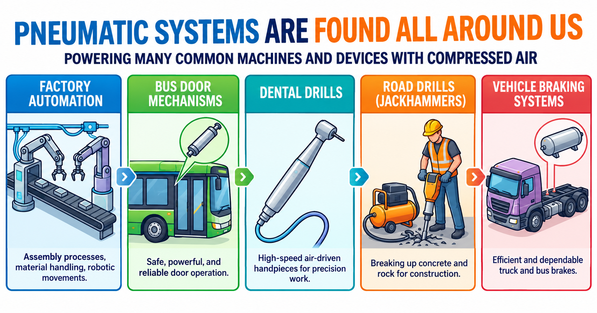
Advantages of pneumatic systems
Pneumatic systems offer several advantages over hydraulic or electrical systems: compressed air is non-flammable and safe to use in hazardous environments; the components are relatively low-cost; speed is easy to adjust using flow control valves; and any leaks result only in air escaping rather than fluid spillage.
Disadvantages
Air is compressible, so precise positioning can be difficult. Pneumatic systems can be noisy, and energy is lost as heat when air is compressed. A compressor and air supply are always required.
1a. Give three examples of pneumatic systems you might encounter in everyday life. For each one, describe what work the compressed air is doing.
1b. Explain two advantages and two disadvantages of using a pneumatic system compared to an electric motor for a door-opening mechanism.
Section 2: Pneumatic Components — Seeing it Work First
Rather than starting with a large number of symbols to memorise, let's watch a real circuit working first. Seeing the simulation below will give you a feel for what's going on — the air flowing, the valve switching, the cylinder moving — before we break down exactly why it behaves that way and what each part is called.
Clicking the push-button valve lets main air flow through to the cylinder, pushing the piston out — the outstroke. Releasing the button cuts off that air supply, and a spring inside the cylinder pushes the piston back in — the instroke — venting the used air out the other side of the valve as it goes.
Now let's look at what you just saw, piece by piece.
Main air supply and exhaust
Every pneumatic circuit needs a main air supply — the pressurised air from the compressor, connected into port 1 of a valve. Exhaust is where used air vents to atmosphere after passing through the circuit, shown in diagrams as an open triangle. After air has been switched by a valve it is known as pilot air.
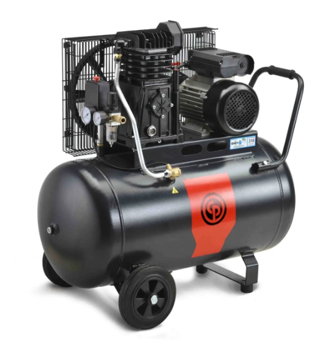
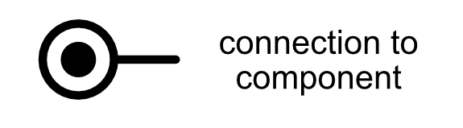
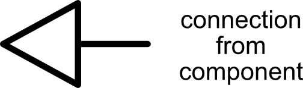
The 3/2 valve
The valve you just operated is a push-button, spring-return 3/2 valve — it has 3 ports and 2 states.
We have to be specific about the full name, because a 3/2 valve can be switched from its normal state to its actuated state in several different ways. The number of ports and states tells you what the valve does; the actuator tells you how it gets triggered. The same 3/2 valve could instead be built as a roller 3/2 valve, a lever 3/2 valve, a pilot 3/2 valve, and so on — the switching behaviour is identical, but what causes the switch is different.
Here are the actuators you'll meet across these notes:
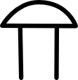
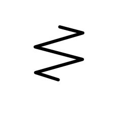

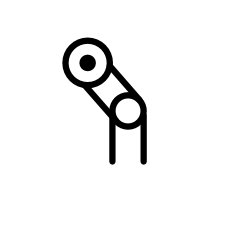
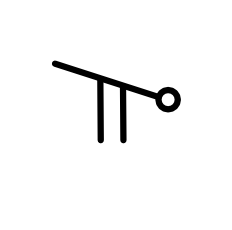
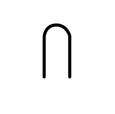
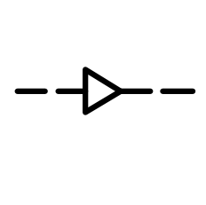
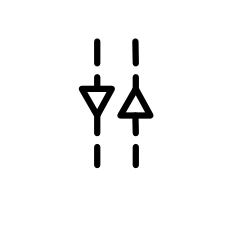
Here's what's actually happening inside a push-button, spring-return 3/2 valve as you press and release the button:
Single acting cylinder (SAC)
The cylinder in the simulation is a single acting cylinder (SAC). Main air causes the outstroke (extension of the piston rod); a spring returns it when the pressure is released. SACs are used where force is only needed in one direction.
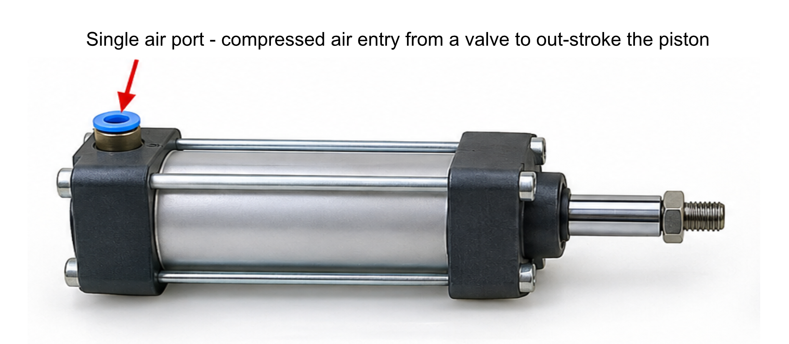
It is therefore useful to be able to recognise symbols and know how they are connected — and the best way to learn to do this is to practice drawing the symbols and circuits yourself. That's why these notes include drawing tasks marked ✏️ throughout. For these, sketch your answer by hand on paper, then photograph or scan it and paste the image directly into the answer box (click inside the box, then paste as you would with text).
2a. Use the No Pressure simulator or physical components to build the SAC circuit. Operate the push-button valve and describe what happens. In your answer, describe the state of the valve and what the cylinder does when the button is pressed and when it is released.
2b. Describe what happens to the ports of a 3/2 valve when it switches from its normal state to its actuated state.
2c. ✏️ Draw the full circuit diagram for the SAC circuit: a 3/2 push-button valve (normal position) connected to a single acting cylinder, with main air and exhaust labelled. Zoom into the symbols in the simulator above (or click on the exemplar below) to check the details of how to draw them. Draw by hand and paste a photo of your drawing here.
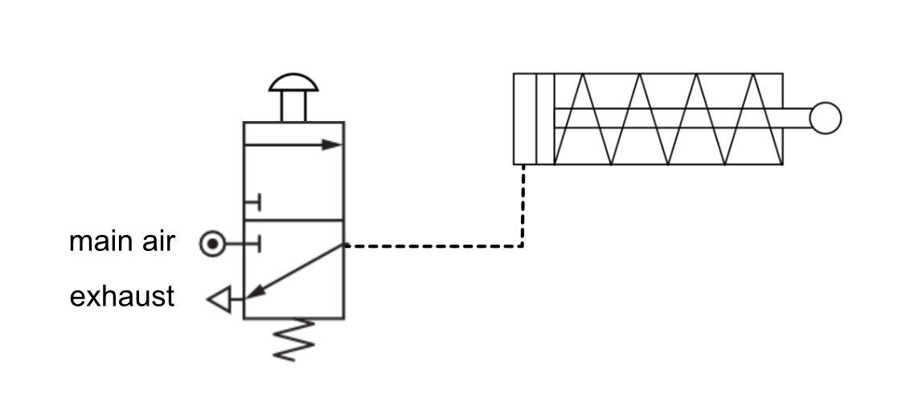
🔍 Click to see an exemplar answerSection 3: T-Piece — Splitting the Air Supply
A T-piece connector lets one main air supply feed two or more branches of a circuit at once. See it in action below.
Both branches receive the same supply pressure. T-pieces are used when a single air source needs to power multiple cylinders or valves at the same time.
3a. Use the simulator or physical components to build a circuit using a T-piece to operate two cylinders from the same main air supply. Describe what you observe. What happens to each cylinder when the valve is operated?
3b. Give one example of a practical application where a T-piece would be useful in a pneumatic circuit.
Section 4: Shuttle Valve (OR control)
A shuttle valve lets a cylinder be operated from two separate control valves — actuating either one, or both together, causes the outstroke. This is known as OR control.
Inside the shuttle valve is a small ball. When main air enters from one inlet, it pushes the ball across to seal the other inlet and passes through to the outlet. If main air enters the other inlet instead, the ball moves the other way and the same thing happens. If main air enters both inlets at the same time, the ball stays where it is and main air still passes through to the outlet.
You might wonder why a plain T-piece couldn't be used here instead, since it also joins two pipes together. A T-piece has no ball or seal inside it — it's just an open junction. If only one of the two valves were actuated, the main air would take the path of least resistance and simply escape out through the other valve's exhaust port, instead of reaching the cylinder. A shuttle valve prevents this by sealing off whichever inlet isn't currently supplying air.
4a. Explain how a shuttle valve works. What happens inside the valve when main air enters from one inlet? What happens if main air enters from both inlets at the same time?
4b. A press in a workshop can be dangerous to operate with one hand. Describe how a shuttle valve could be used as part of a two-handed safety circuit.
4c. ✏️ Draw the circuit symbol for a shuttle valve, clearly showing its two inlets and single outlet. Draw by hand and paste a photo of your drawing here.
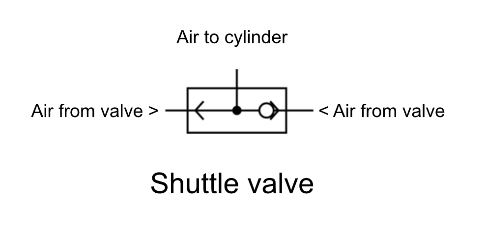
🔍 Click to see an exemplar answerSection 5: AND Control
Section 4 covered OR control — where valve A or valve B (or both valves) are actuated to outstroke a cylinder. Sometimes you want a cylinder to only outstroke if two conditions are both satisfied at once. This is called AND control.
Where AND control is used
The classic example is a two-handed safety control on a machine like a guillotine or a press. If the machine only needed one button pressed, an operator could reach into the danger area with their free hand while pressing the button with the other. Setting up the machine so that both buttons — one for each hand — must be pressed at the same time guarantees both of the operator's hands are safely out of the way before the machine can move.
Other examples include a machine guard that must be closed and a start button pressed before a cylinder will move, or a security gate that needs a card swipe and a button press together.
5a. ✏️ Using two 3/2 push-button, spring-return valves and a single acting cylinder, design a circuit where the cylinder will only outstroke when both push-buttons are pressed at the same time. Pressing only one button (either one) must not cause the outstroke. Clue: you only need one main air supply. Draw your circuit by hand and paste a photo of it here.
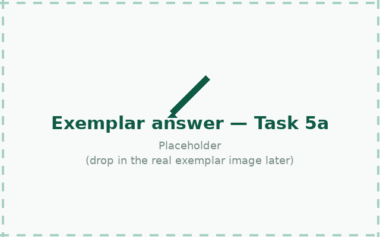
🔍 Try the design yourself first — then click here to compare against an exemplar answer5b. Build or simulate your design. Test what happens when you press only the first button, only the second button, and both together. Describe what you observed for each test.
5c. Explain, in terms of the path the main air has to take, why pressing only one of the two valves does not cause the cylinder to outstroke.
Section 6: Speed Control — Restrictors
In many applications it is necessary to control the speed that the cylinder moves. This is achieved by restricting the flow of air.
The restrictor
A restrictor (sometimes called a throttle valve) slows a cylinder down by reducing the amount of space the air can flow through — a small adjustable screw narrows the passage, so less air can get through per second. The narrower you make it, the slower the cylinder moves.
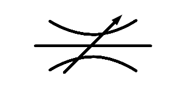
The uni-directional restrictor (UDR)
A uni-directional restrictor solves this by combining the same adjustable restriction with a one-way bypass channel running alongside it. The bypass contains a small flap or ball that acts like a one-way valve:
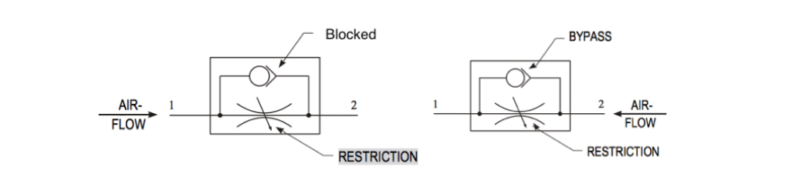
- In the left-hand diagram, air is trying to flow from port 1 to port 2. The flap is pushed shut, blocking the bypass channel, so the air is forced through the narrow adjustable orifice — this direction is restricted.
- In the right-hand diagram, air is flowing the other way, from port 2 to port 1. This pushes the flap open, so the air flows straight through the wide bypass channel instead — this direction is not restricted.
That's why it's called uni-directional: free flow one way, restricted flow the other — set by the single adjustable screw.
Where to put it
A UDR is placed so that it restricts the air leaving the cylinder (the exhaust side), not the air coming in. If you restrict the incoming air instead, the piston has to fight to build up enough pressure to move at all, while the opposite side empties out freely — this makes the motion hesitant and jerky. Restricting the exhaust instead means main air can still push in freely, and the piston is held back smoothly by air trapped behind it, controlled by how fast it's allowed to escape.
6a. Use the simulator or physical components to build a circuit with a UDR. Adjust the restrictor and observe how the cylinder speed changes. Explain, using the idea of the bypass channel, why a UDR only restricts the airflow in one direction.
6b. A packaging machine uses a SAC to push items along a conveyor. The operator wants the outstroke to be slow but the instroke to be quick. Explain where a uni-directional restrictor (UDR) should be placed and how it should be oriented to achieve this.
6c. ✏️ Draw a SAC circuit with a uni-directional restrictor correctly positioned on the exhaust to slow the outstroke. Label the direction of free flow and restricted flow. Draw by hand and paste a photo of your drawing here.
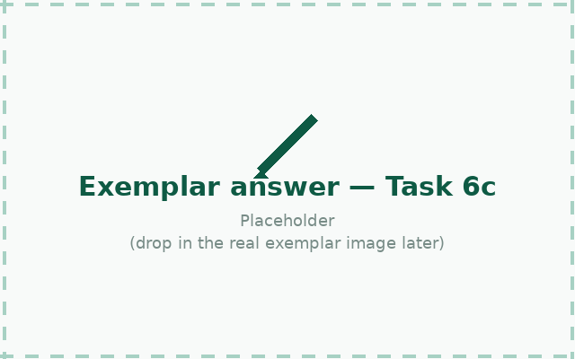
🔍 Click to see an exemplar answerSection 7: Air Bleed (Diaphragm) Circuit
An air bleed circuit works differently from every circuit so far — instead of pressing a valve to supply air, it works by blocking a small continuous flow of air. Try it in the simulator before reading the detail.
How it works
The circuit uses a diaphragm-actuated 3/2 valve. In the normal state, main air constantly bleeds to atmosphere through a small hole in the circuit (the bleed point). Because this air is always escaping, there is never enough pressure to act on the diaphragm — the valve stays in its normal state and the cylinder remains instroked.
A uni-directional restrictor (UDR) is fitted between the main air supply and the bleed nozzle. Adjusting it controls how freely air is allowed to escape at rest, which lets the circuit be tuned to suit whatever is being sensed — open it up for something that blocks the nozzle firmly and completely, or wind it in so that even the lightest, most fleeting obstruction is enough to build up pressure and switch the valve.
When an object covers the bleed hole, the escaping air is blocked. Pressure immediately builds up behind the diaphragm. Once it reaches the switching threshold, the diaphragm switches the 3/2 valve, main air flows to the cylinder, and the cylinder outstrokes.
As soon as the obstruction is removed, air bleeds away again, pressure drops, the diaphragm releases, and the valve spring returns it to its normal state — causing the cylinder to instroke.

7a. Explain how an air bleed circuit works. In your answer, describe what happens at the bleed point when it is open, and what happens when it is blocked.
7b. Describe one practical application of an air bleed circuit. Explain what causes the bleed to be blocked in your example and what action this triggers.
7c. State one key difference between an air bleed circuit and a standard push-button SAC circuit.
7d. ✏️ Draw the full air bleed circuit: including the diaphragm-actuated 3/2 valve, the bleed point, main air, exhaust, and the single acting cylinder. Try to do this as best you can from memory before you look at the simulator or solution below. Draw by hand and paste a photo of your drawing here — then check it against the diagram above.
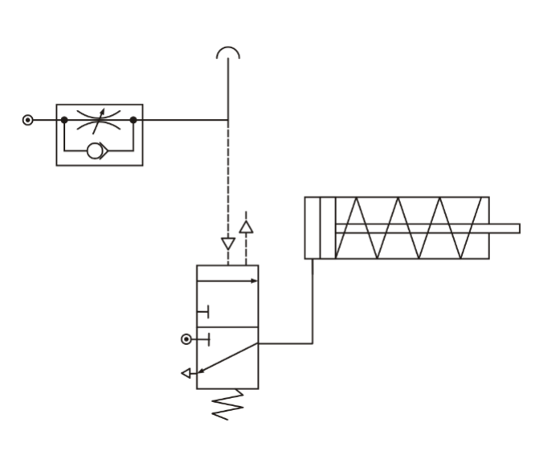
🔍 Click to see an exemplar answerSection 8: Double Acting Cylinder Circuit
So far, we've been working with cylinders that only need to be controlled in one direction. A spring has returned the piston to where it started. However, we often need to control both the outstroke and instroke of a cylinder. To do this, we use a double acting cylinder (DAC) that has a port at each end. Let's consider using 3/2 valves to directly control the air going into each end of a DAC.
The problem with two 3/2 valves
Imagine connecting one 3/2 push-button valve to the outstroke side of a DAC, and a second 3/2 push-button valve to the instroke side. Pressing the first button lets main air push the piston out; pressing the second lets main air push it back in.
This sounds reasonable, but it relies entirely on the operator pressing exactly one button at a time, in the right order. Press both together, or release both, and neither side of the piston is being actively driven — the cylinder just sits wherever it happens to be, with nothing holding it firmly in position. There's nothing in the circuit itself that prevents this.
That's exactly what a 5/2 directional control valve does. Because it only ever has two possible states, and each state connects main air to one side while exhausting the other, it's physically impossible for both sides (or neither side) to be pressurised at once. Try it in the simulator below.
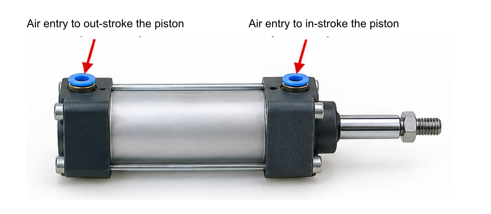
A 5/2 valve has five ports and two states. In one state, port 1 (main air) connects to port 2 (outstroke side) while port 4 (instroke side) exhausts through port 5. Switching the valve reverses this: port 1 now connects to port 4, while port 2 exhausts through port 3. Changing the state of the valve therefore reverses the direction of the cylinder — and at every moment, one side is under pressure while the other is venting.
8a. Use the No Pressure simulator or physical components to build the DAC circuit. Operate the 5/2 valve in both directions. Describe what you observe and explain how the DAC differs from the SAC circuit you built in Task 2.
8b. A DAC circuit has its 5/2 valve in the normal state. Describe what the cylinder is doing. Explain what happens to the cylinder when the valve changes to its actuated state.
8c. ✏️ Draw the full circuit diagram for a DAC circuit: a 5/2 push-button valve operated by two 3/2 valves, connected to a double acting cylinder, with the ports numbered. Zoom into the symbols in the simulator above (or click on the exemplar below) to check the details of how to draw them. Draw by hand and paste a photo of your drawing here.
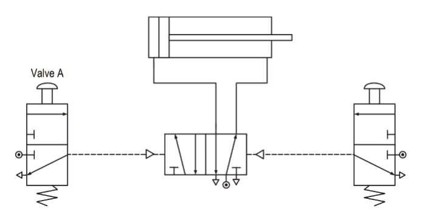
🔍 Click to see an exemplar answerSection 9: Semi-Automatic Circuit
A semi-automatic circuit needs a manual input to start each cycle, but part of the operation happens automatically.
The cylinder extends (outstroke), then automatically retracts (instroke) when it reaches the end stop. The circuit then waits for your next button press.
A typical arrangement uses a DAC, a 5/2 valve with pilot actuators, and a roller spring-return valve triggered by the cylinder rod at the end of its outstroke.
9a. Describe the complete operating cycle of a semi-automatic pneumatic circuit. Include reference to: the pilot signal, how main air causes the outstroke, what triggers the instroke, and what happens at the end of the cycle.
9b. Explain the difference between a manual circuit and a semi-automatic circuit. Give one advantage of using a semi-automatic circuit in a production environment.
Section 10: Fully Automatic Circuit
A fully automatic circuit repeats its cycle continuously without any manual input after the initial start signal.
This automatic cycle would continue until main air is cut off.
10a. Explain the role of each limit valve in a fully automatic circuit. What would happen if the limit valve at the retracted position were removed?
10b. A fully automatic circuit is used in a bottling plant to cap bottles on a conveyor. Describe how the circuit could be modified to allow an operator to stop the machine safely at the end of a cycle (not mid-stroke).
Section 11: Time Delay Circuit
A time delay valve introduces a controllable delay between an input signal and an output action.
The circuit consists of a uni-directional restrictor feeding a reservoir, which builds up main air pressure slowly until it is high enough to pilot (switch) a 3/2 output valve. By adjusting the restrictor, the fill time of the reservoir — and therefore the length of the delay — can be changed. Increasing the size of the reservoir will also increase the delay time, as more volume must be filled before the pilot threshold is reached. When the input signal is removed, the reservoir vents quickly back through the UDR and the timer resets immediately.
11a. Describe how a pneumatic time delay circuit produces a time delay. Include reference to the restrictor, reservoir, and pilot-operated output valve.
11b. A time delay circuit is set to delay for 3 seconds. An engineer wants to increase the delay to 8 seconds. Explain two ways this could be achieved.
11c. Use the simulator or physical components to build a time delay circuit. Adjust the UDR to make the delay longer and shorter. Describe what you observe and explain why adjusting the restrictor changes the delay time.
11d. Describe one practical application of a time delay circuit in an industrial or domestic context. Explain what the delay achieves in your chosen example.
11e. ✏️ Draw the two key components that generate a time delay in a pneumatics circuit. Label the components and the direction of air flow. Draw by hand and paste a photo of your drawing here.
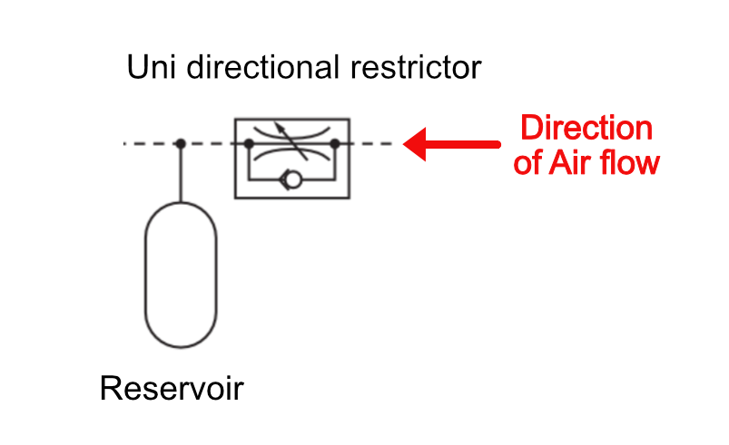
🔍 Click to see an exemplar answerSection 12: Electrical Control of Pneumatics
Every circuit so far has been switched by hand, by a pilot air signal, or automatically by another part of the pneumatic circuit. A pneumatic valve can also be switched electrically, using a solenoid actuator — a coil that, when energised, moves the valve's spool. This is how pneumatic systems are controlled by microcontrollers, Programmable Logic Controllers (PLCs) and other electronic systems.
A solenoid-actuated valve is connected to an electrical control system (such as a microcontroller or PLC). When the control system sends an electrical signal to the solenoid, it switches the valve and main air flows to the cylinder. When the electrical signal is removed, the spring returns the valve to its normal state and the cylinder instrokes. This allows a pneumatic circuit to be controlled entirely by software or by electronic sensors such as light gates or pressure switches.

12a. Explain the difference between a pilot actuator and a solenoid actuator on a valve. In which type of circuit would each be used?
12b. Give one example of a sensor that could be used to trigger a solenoid valve electrically, and describe the pneumatic action it would cause.
12c. ✏️ Draw the full solenoid circuit diagram: a solenoid-actuated 3/2 valve connected to a single acting cylinder, labelling the electrical signal, main air and exhaust. Draw by hand and paste a photo of your drawing here.
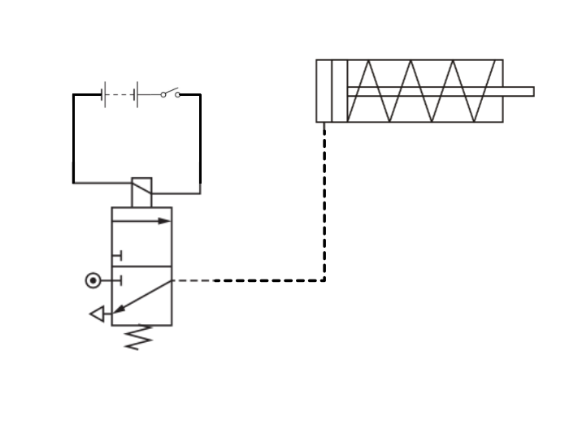
🔍 Click to see an exemplar answerSection 13: Calculating Cylinder Force
The force a pneumatic cylinder can produce depends on two things: the air pressure in the circuit, and the area of the piston that the pressure is acting on.
You can rearrange this formula to find any of the three quantities. The FPA triangle is a useful memory aid:
Cover the quantity you want to find — the other two show how to calculate it.
Piston area and rod area
A single acting cylinder only has main air pushing on one side of the piston (the outstroke). The full circular face of the piston is available to push against, so the effective area is simply the piston area:
Engineers use the diameter of the piston (rather than its radius) mainly because diameter is what's easy to measure in the workshop — you can measure straight across a piston or a rod with a pair of callipers (or a vernier calliper) far more easily and accurately than you could measure to the centre for a radius.
A double acting cylinder has main air pushing on both sides of the piston, one side at a time. On the outstroke, the full piston area is available — exactly like a SAC. On the instroke, main air acts on the other side of the piston, but the piston rod takes up part of that face, so the effective area is the piston area minus the rod area.
Worked Example — outstroking and instroking force
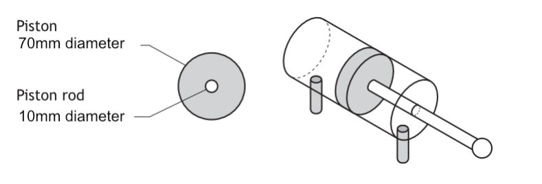
The cylinder above has a piston diameter of 70 mm and a piston rod diameter of 10 mm. It is supplied at 0.5 N/mm². Calculate the outstroking force and the instroking force.
13a. A SAC has a piston diameter of 20 mm and is supplied at 0.4 N/mm². Calculate the outstroke force in newtons. Show your working.
13b. A DAC has a piston diameter of 40 mm and a piston rod diameter of 12 mm, supplied at 0.6 N/mm². Calculate (i) the outstroking force and (ii) the instroking force. Show your working for both, including the piston area and the rod area.
13c. Explain, in terms of piston area and rod area, why a DAC's instroking force is always lower than its outstroking force at the same supply pressure.
Section 14: Design Challenges
The questions in Sections 1–12 checked that you understand each circuit individually. The three challenges below work differently — each one gives you a real-world context and a written specification, the same way an assignment does. Nobody will show you the circuit first: you have to work out which components to use and how to connect them, then build or simulate your design and check it actually meets the spec.
Design Challenge 1 — Car wash spray arm
A car wash has a spray arm, powered by a double acting cylinder, that swings out over each car. If the arm swings out too fast it splashes water everywhere, so it needs to move out slowly and under control. Once the wash is finished, the arm should retract quickly out of the way so the next car can pull in.
| i | Pressing push-button A must cause the cylinder to outstroke slowly and smoothly. |
|---|---|
| ii | Pressing push-button B must cause the cylinder to instroke at normal (unrestricted) speed. |
| iii | The circuit must not restrict the main air supply into the cylinder at any point. |
DC1a. Design a pneumatic circuit to meet the specification above. You must identify every component, valve and actuator, and show the connections between them. Draw by hand and paste a photo of your design here.
DC1b. Build or simulate your design and test it. Describe what actually happened when you pressed each button, and paste a photo or screenshot of your working circuit here.
DC1c. Evaluate your circuit against each point of the specification. For each point, state whether it is met and justify your answer.
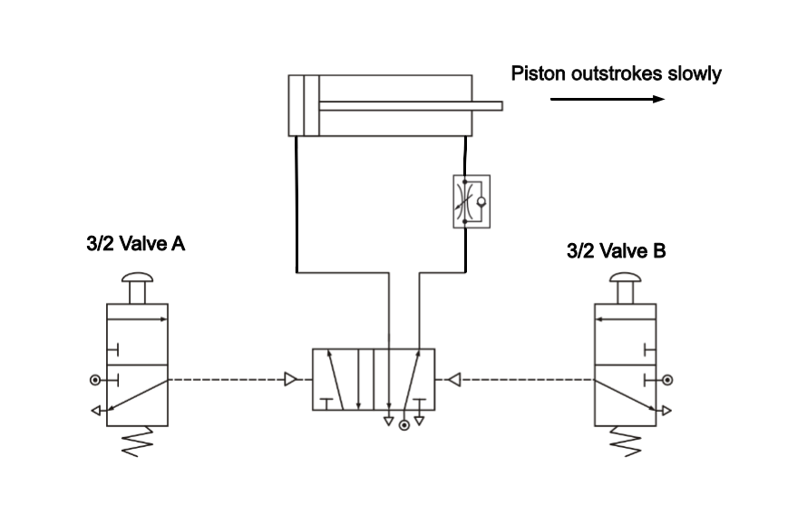
🔍 Try the design yourself first — then click here to compare against an exemplar answerDesign Challenge 2 — Greenhouse roof vent
A commercial greenhouse has a long roof vent, opened and closed by a double acting cylinder, that needs to be controlled from either end of the greenhouse — whichever member of staff is closest should be able to open it, without needing to know whether someone at the other end is also about to use it.
| i | The cylinder must outstroke (open the vent) when push-button valve 1 or push-button valve 2 is actuated, whether the other is actuated or not. |
|---|---|
| ii | The cylinder must instroke (close the vent) when a third push-button valve is actuated. |
DC2a. Design a pneumatic circuit to meet the specification above. You must identify every component, valve and actuator, and show the connections between them. Draw by hand and paste a photo of your design here.
DC2b. Build or simulate your design. Test it with valve 1 alone, valve 2 alone, and both together. Paste a photo or screenshot of your working circuit here, with a note of what you observed for each test.
DC2c. A colleague suggests replacing the shuttle valve with a simple T-piece, since "it also joins two pipes together." Explain why this would not work.
DC2d. Can you suggest a design improvement? This should make the solution better than is specified.
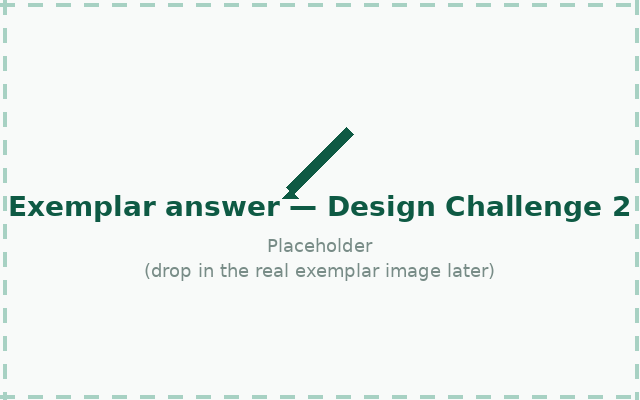
🔍 Try the design yourself first — then click here to compare against an exemplar answerDesign Challenge 3 — Car park barrier
An automatic barrier at a car park entrance is raised by a double acting cylinder. When a driver presses a button, the barrier should raise. Once fully raised, it should stay up just long enough for the car to pass, then lower automatically by itself — without the driver having to press anything else.
| i | Pressing the entry button must cause the cylinder to outstroke, raising the barrier. |
|---|---|
| ii | Once the barrier reaches the fully raised position, an adjustable time delay of a few seconds must occur. |
| iii | After the delay, the cylinder must instroke automatically, lowering the barrier, with no further input from the driver. |
DC3a. Design a pneumatic circuit to meet the specification above. You must identify every component, valve and actuator, and show the connections between them. Draw by hand and paste a photo of your design here.
DC3b. Build or simulate your design and test it. Describe what happened, and paste a photo or screenshot of your working circuit here.
DC3c. Evaluate your circuit against each point of the specification, stating whether it is met and justifying your answer. Then suggest one improvement that would make the barrier safer for a car that is still underneath it when the delay ends.
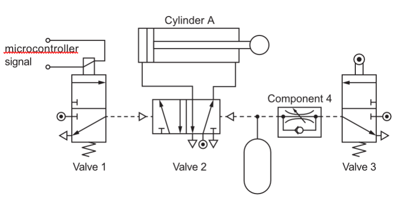
🔍 Try the design yourself first — then click here to compare against an exemplar answer